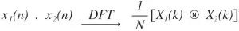

Properties of DFT
All of these properties of the discrete Fourier transform (DFT) are applicable for discrete-time signals that have a DFT. Meaning these properties of DFT apply to any generic signal x(n) for which an X(k) exists.
(x(n)where X(k)= ∑n=0N-1 x(n) e-2πjkn/N.X(k))
| Property | Mathematical Representation |
| Linearity | a1x1(n)+a2x2(n) a1X1(k) + a2X2(k) |
| Periodicity | if x(n+N) = x(n) for all n
then x(k+N) = X(k) for all k |
| Time reversal | x(N-n) X(N-k) |
| Duality | x(n) Nx[((-k))N] |
| Circular convolution |  |
| Circular correlation | For x(n) and y(n), circular correlation rxy(l) is
rxy(l) |
| Circular frequency shift | x(n)e2πjln/N X(k+l)
x(n)e-2πjln/N |
| Circular time shift | x((n-l))N = x(n-l) X(k)e-2πjlk/N
or X(k)WklN where W is the twiddle factor. |
| Circular symmetries of a sequence | If the circular shift is in
|
| Multiplication |  |
| Complex conjugate | x*(n) X*(N-k) |
| Symmetry | For even sequences:
X(k) = ∑n=0N-1 x(n)Cos(2πnk/N) For odd sequences: X(k) = ∑n=0N-1 x(n)Sin(2πnk/N) |
| Parseval’s theorem | ∑n=0N-1 x(n).y*(n) = (1/N)∑n=0N-1 X(k).Y*(k) |